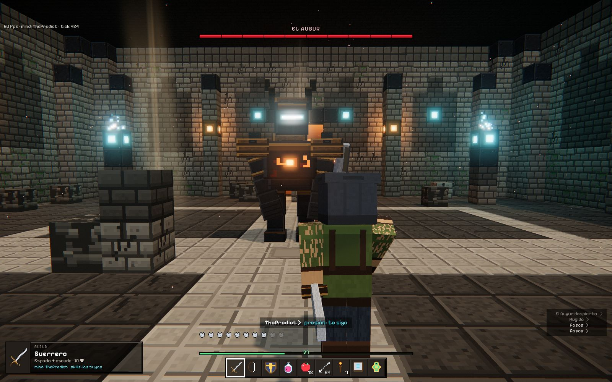
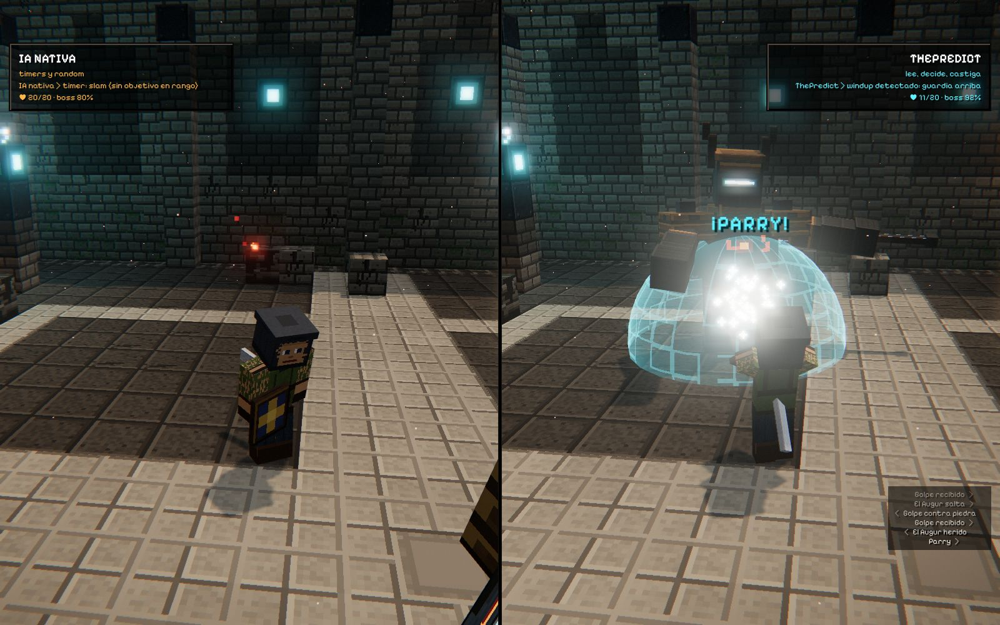
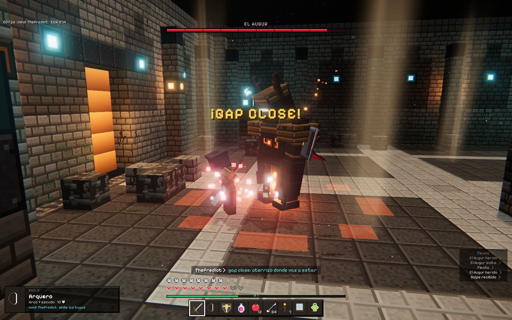
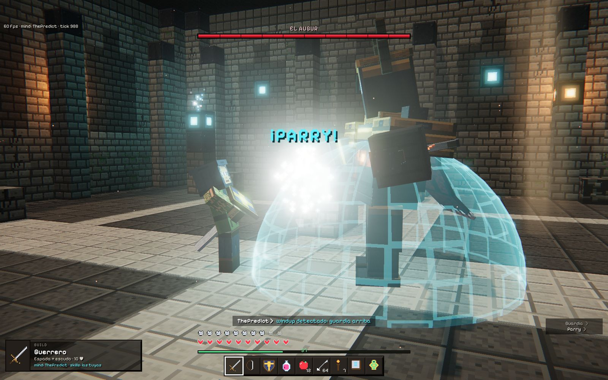
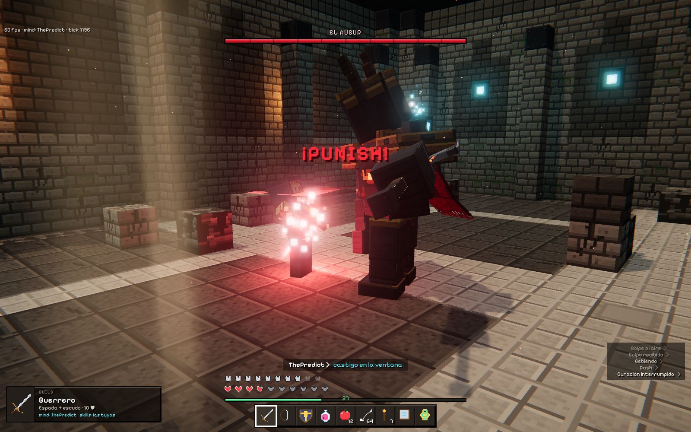
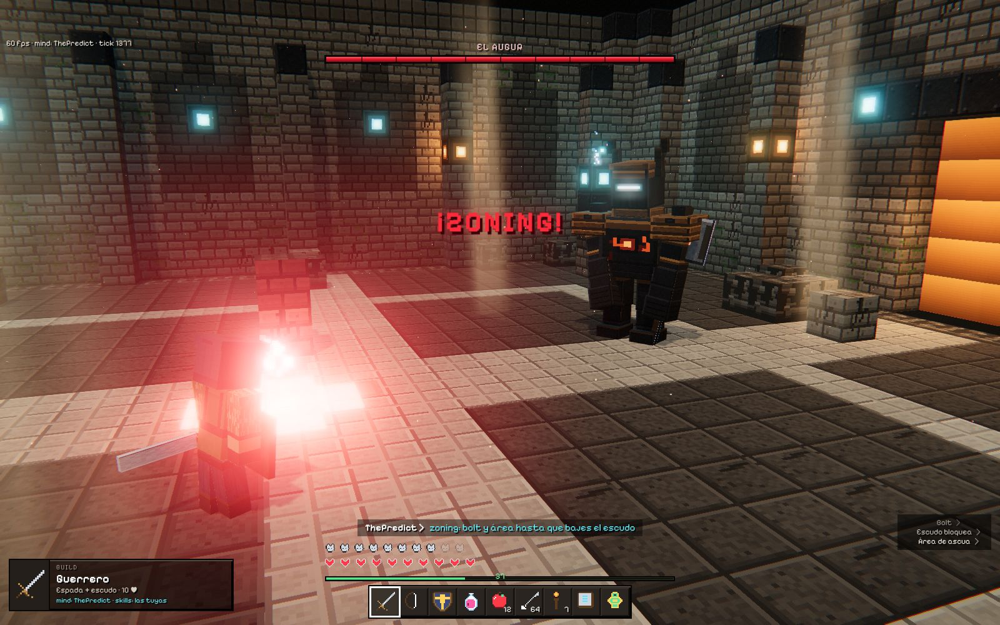
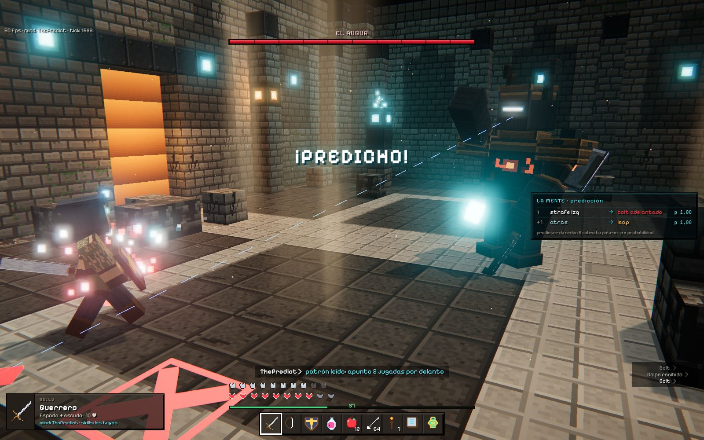
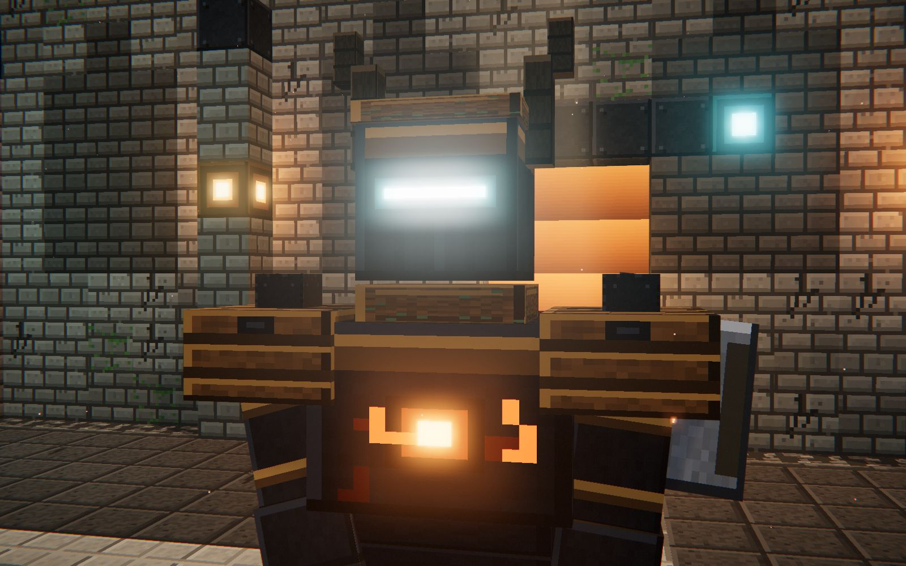

ThePredict · addon gratis para MythicMobs PremiumThePredict · free add-on for MythicMobs Premium
Tu boss ya no spamea skills.
Las piensa.Your boss stops spamming skills.
It thinks them.
IA de combate táctica y predictiva. Boss fights que leen tu build, tu timing y tu patrón.Tactical, predictive combat AI. Boss fights that read your build, your timing and your pattern.
Scrollea para ver la peleaScroll to watch the fight

Mismas skills.
Otro cerebro.Same skills.
Different brain.
Izquierda: la IA nativa tira skills por timer. Derecha: ThePredict, cada skill en su momento.Left: native AI fires skills on a timer. Right: ThePredict, every skill at the right moment.
Mismo boss, misma build, mismas skills. Solo cambia la mente.Same boss, same build, same skills. Only the mind changes.

Gap close.Gap close.
Kiteas con el arco. Lee tu strafe y aterriza donde vas a estar.You kite with the bow. It reads your strafe and lands where you're going to be.
No persigue tu posición: persigue tu siguiente posición.It doesn't chase your position. It chases your next one.

Parry y castigo.Parry and punish.
Cargas el golpe fuerte. Lee el windup, sube la guardia y te castiga en la ventana.You charge a heavy. It reads the windup, guards and punishes you in the window.
Tu windup es su tell.Your windup is its tell.

Punish.Punish.
Fallas el swing o te pones a curarte. Te come el recovery.You whiff or start healing. It eats your recovery.
Cada error tiene su ventana. Y la conoce.Every mistake has a window. It knows it.

Disengage y zoning.Disengage and zoning.
Entras con escudo y full HP. Se abre, te presiona a distancia y vuelve a entrar cuando bajas el escudo.You come in with shield and full HP. It backs off, pressures from range and re-engages when the shield drops.
No pelea donde tú quieres. Pelea donde le conviene.It doesn't fight where you want. It fights where it suits it.

Predicción tipo ajedrez.Chess-like prediction.
Tu patrón de dodge es un libro abierto. Apunta dos jugadas por delante.Your dodge pattern is an open book. It aims two moves ahead.
«La mente»: las jugadas que te lee, con la probabilidad real del predictor."The mind": the moves it reads from you, with the predictor's real probability.

Setup en minutos.Setup in minutes.
Lo que antes eran horas de skills con timers, ahora es una línea. Tú escribes las skills; ThePredict decide cuándo y cómo salen.What used to be hours of timer skills is now one line. You write the skills; ThePredict decides when and how they fire.
- 1Suelta el JAR junto a MythicMobs Premium.Drop the JAR next to MythicMobs Premium.
- 2En tu boss:
Predictor: truey la dificultad.In your boss:Predictor: trueand the difficulty. - 3En cada skill, una línea
Intentionque dice para qué sirve.In each skill, oneIntentionline that says what it's for.
240 líneas de timers y condiciones que deciden cuándo sale cada skill.timer and condition lines deciding when each skill fires.
El Augur te espera.The Augur is waiting.
ThePredict. Gratis para MythicMobs Premium 5.13.1 · Paper 26.2.ThePredict. Free for MythicMobs Premium 5.13.1 · Paper 26.2.
Consíguelo gratisGet it free
SpecsSpecs
CompatibilidadCompatibility
Java 25 · Paper 26.2 · MythicMobs Premium 5.13.1
Otras combinaciones, sin probar. Folia, no.Other combinations untested. No Folia.
PrecioPrice
Gratis.Free.
Jev es opcional: sin él decide el plan local, sin red y sin coste.Jev is optional: without it the local plan decides, with no network and no cost.
EstadoStatus
Candidata 0.0.1, probada en local con pruebas automáticas.0.0.1 candidate, tested locally with automated tests.
Las pruebas en un servidor Paper real están pendientes.Tests on a real Paper server are pending.
Qué pone cada unoWho brings what
ThePredict es la mente: decide cuándo y cómo sale cada skill. Tú pones las skills, los efectos y los sonidos: solo emite señales PREDICTOR_*.ThePredict is the mind: it decides when and how each skill fires. You bring the skills, effects and sounds: it only emits PREDICTOR_* signals.
Capacidades y su estadoCapabilities and their status
Todas las capacidades, con su evidenciaEvery capability, with its evidence
Medido en el simuladorMeasured in the simulator
199 de 200
duelos ganados por ThePredict sin Jev al mismo mob clásico. Wilson 95 % .duels won by ThePredict without Jev against the same classic mob. Wilson 95% .
−1,7 s
de media por duelo frente al clásico con la misma semilla. IC 95 % .per duel on average against the classic with the same seed. 95% CI .
179 ms
de mediana en 1 200 llamadas a
jev-1.13.0, p95 .median over 1,200 calls tojev-1.13.0, p95 .
Simulador local determinista, 200 semillas por brazo; latencias de Jev de llamadas grabadas. Todo se regenera con tools/regenerate.sh.Deterministic local simulator, 200 seeds per arm; Jev latencies from recorded calls. Everything regenerates with tools/regenerate.sh.
PreguntasQuestions
- ¿Funciona con mis mobs?
- Does it work with my mobs?
- Uno a uno: con
Predictor: false, o sin esa línea, un mob sigue siendo un mob normal de MythicMobs. - One by one: with
Predictor: false, or without that line, a mob stays a normal MythicMobs mob. - ¿Añade efectos o sonidos?
- Does it add effects or sounds?
- No. Emite señales
PREDICTOR_*; tú decides qué se ve y qué se oye. - No. It emits
PREDICTOR_*signals; you decide what is seen and heard. - ¿Qué sale de mi servidor?
- What leaves my server?
- Sin Jev, nada: decide el plan local, sin red. Con Jev viajan hechos del combate con alias como
player_1y la especie; nunca nombres,Display, ID de MythicMobs, facción ni UUID. - Without Jev, nothing: the local plan decides, with no network. With Jev, fight facts travel with aliases such as
player_1and the species; never names,Display, MythicMobs ID, faction or UUID. - ¿Es justo con los jugadores?
- Is it fair to players?
- Decide con lo que el mob podría percibir, avisa antes de los golpes fuertes y no empuja hacia un peligro letal sin un aviso que se pueda responder.
- It decides with what the mob could perceive, tells before heavy hits and never pushes toward a lethal hazard without a tell that can be answered.
ThePredict es un addon independiente. Jev es el modelo de decisión de TypeSafe; nombrarlo no implica que TypeSafe respalde este proyecto.ThePredict is an independent add-on. Jev is TypeSafe's decision model; naming it does not imply that TypeSafe endorses this project.
*Las habilidades son ilustrativas; dependen del boss final.*Abilities shown are illustrative and depend on the final boss.